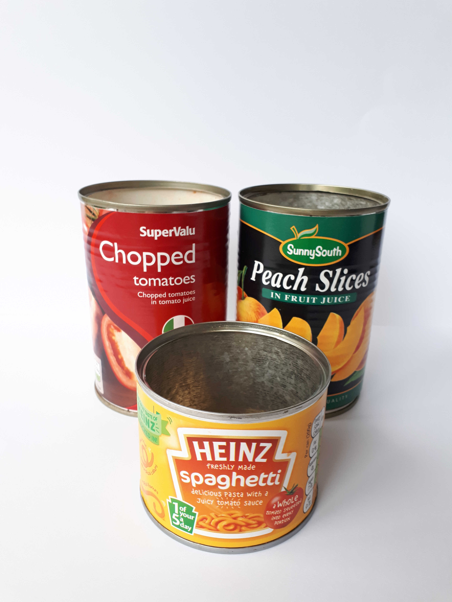
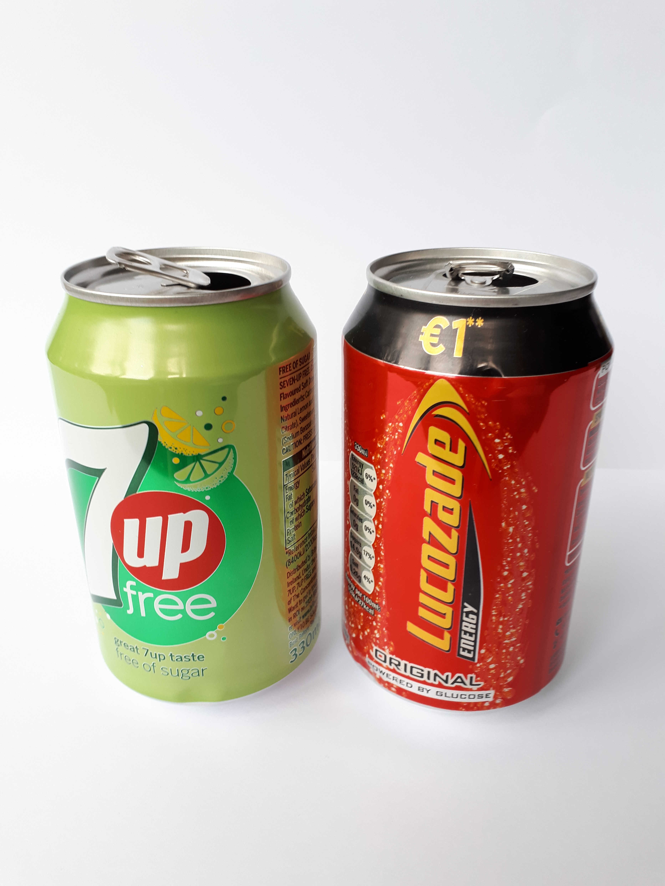

Tins & Cans
Yes, please
No, thanks

Soup tins, fruit tins, beans tins and pet food tins are all recyclable in household recycling bins.

Drinks cans are recyclable in household recycling bins but make sure they are empty and dry before recycling as otherwise they could contaminate your paper and cardboard recycling.

Metal lids from jars are recyclable in household recycling bins. The jars themselves are not: bring glass to a bottle bank. Domestic recycling waste is often sorted by hand so it makes sense that glass should not be included.
For the sake of the environment, batteries must be recycled appropriately and can be placed in the battery boxes located in any shop that sells them.